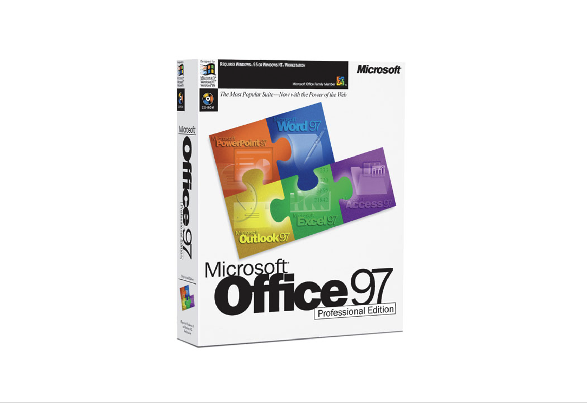
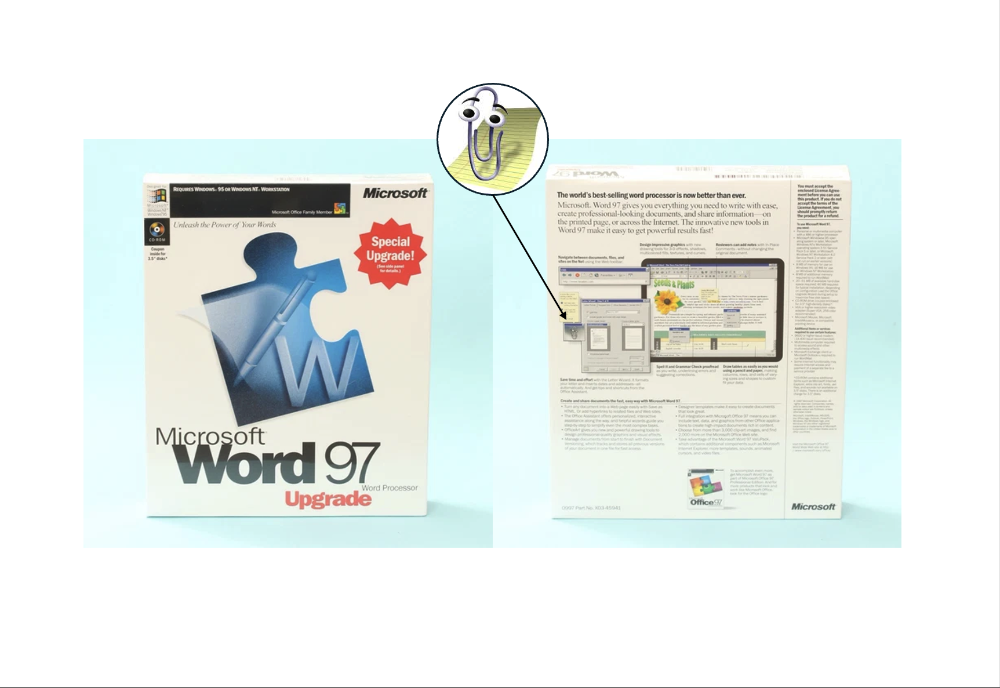
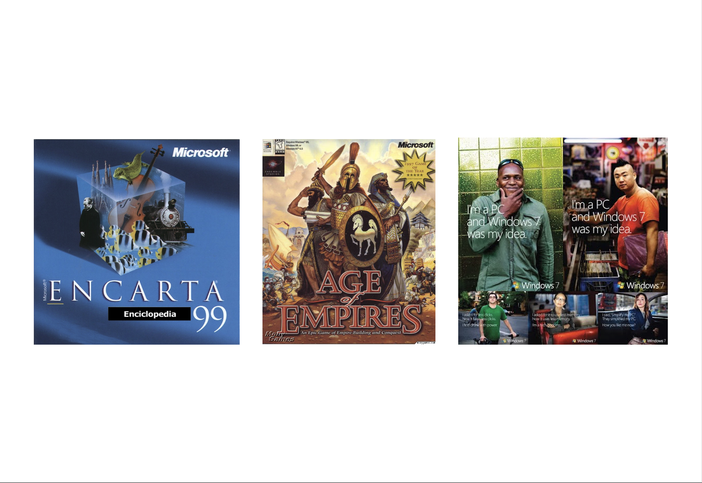
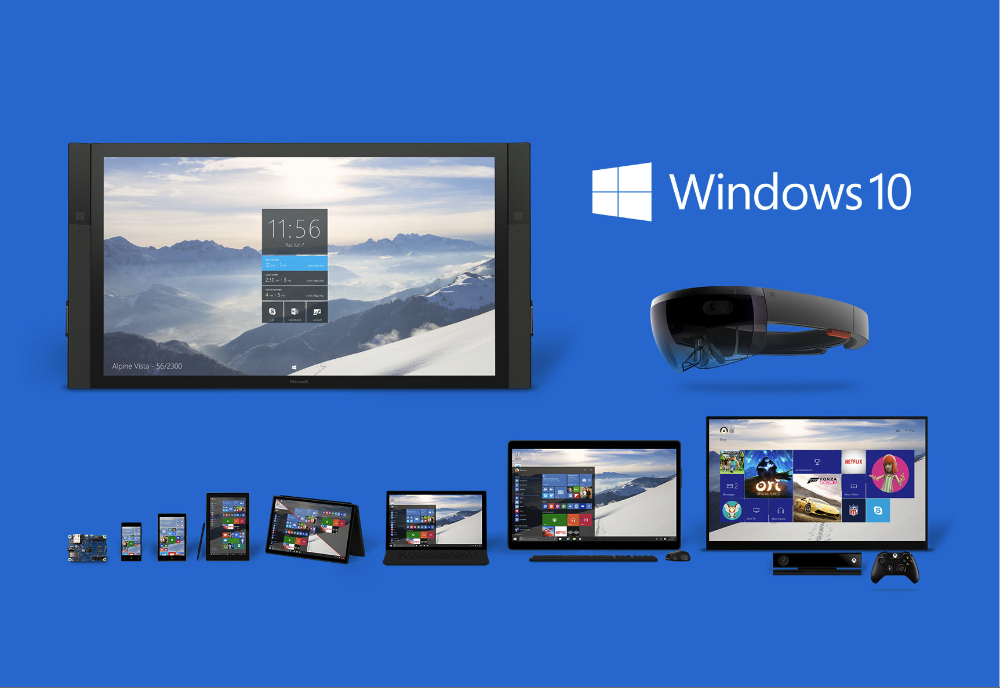
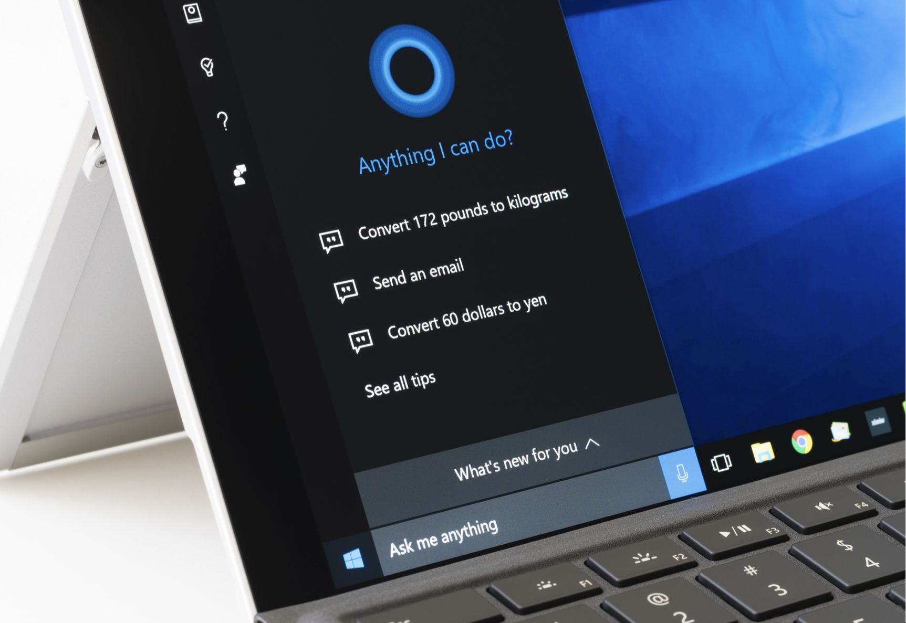
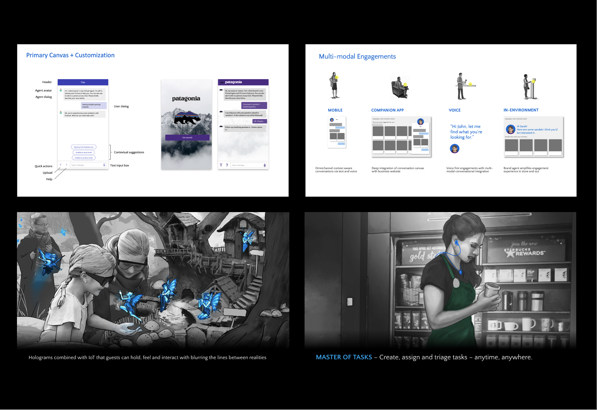
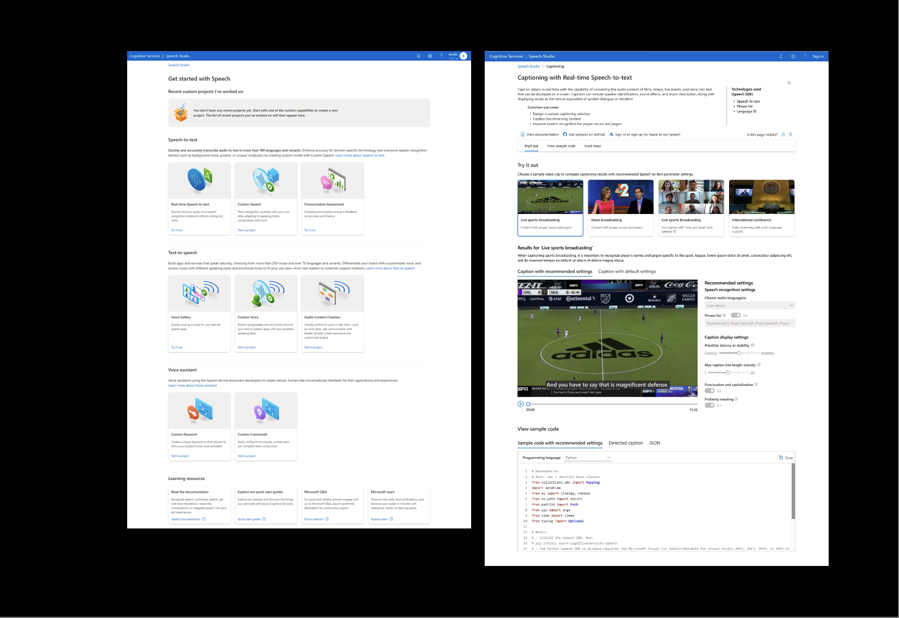
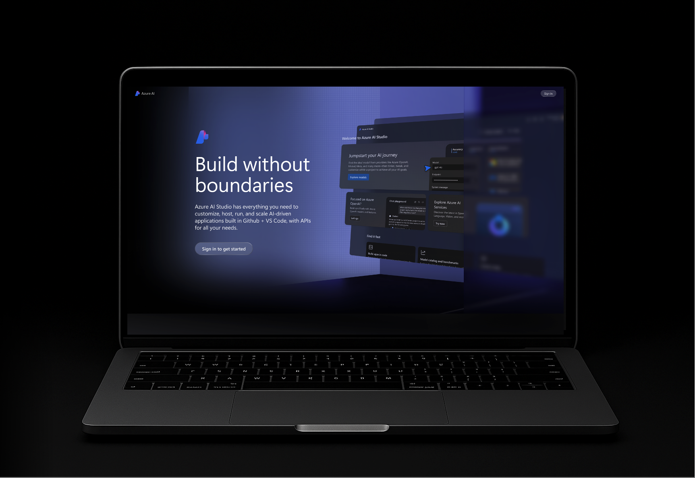
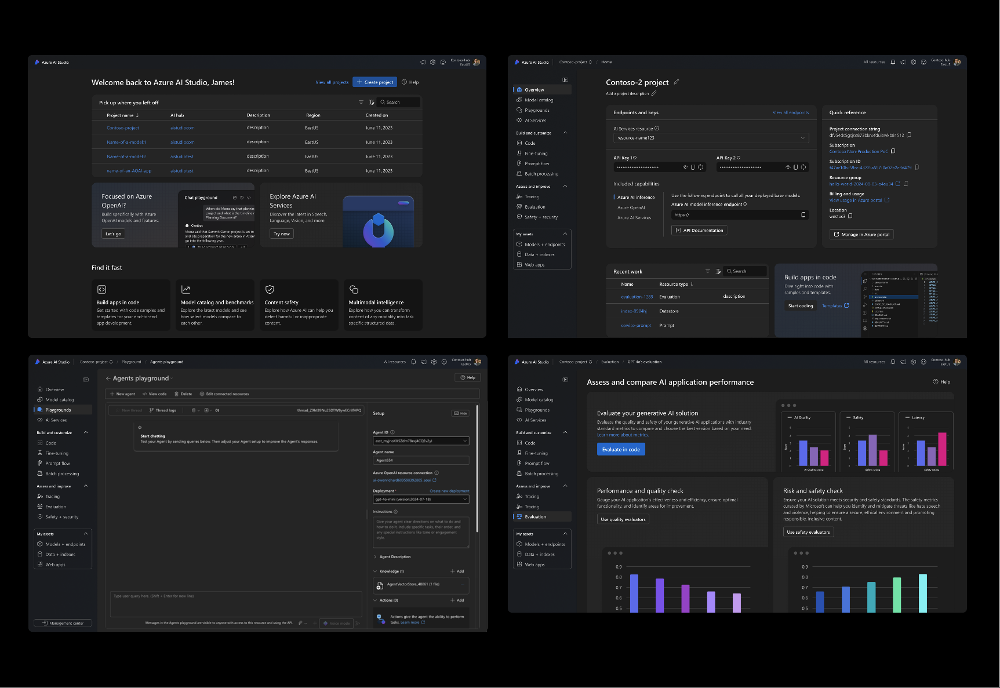

Microsoft · 1997–2025
My Journey
to AI Agents.
I want to provide a quick overview of the work I did for Microsoft — both as an agency vendor and as a full-time employee. This is the story behind the résumé: how a packaging designer ended up building the UX patterns that define how developers build with AI today.
Packaging
The First Thing I Ever Designed for Microsoft
The first thing I ever designed for Microsoft was the identity and packaging system for Office 97. Working as a designer at Hornall Anderson, this was my entry point into the Microsoft ecosystem — and the beginning of a relationship that would define the next 28 years.

First AI
First Exposure to UX — and to AI, via Clippy
While working on back-of-box designs for the packaging system, I was exposed to UX design for the first time — partnering with Microsoft’s designers to capture screenshots for our layouts.
Coincidentally, this would also be my first exposure to machine learning and AI via Clippy. Who knew it would be the harbinger for designs to come.

2013
Era
Designing Pretty Much Everything Except UX
For the next several years I would continue to work on multiple projects for Microsoft — typically 2–3 a year. Identities and packaging systems, brand guidelines, marketing campaigns, and tradeshows.
I designed pretty much everything except for UX.

Microsoft
Hired for Brand Thinking. Expected to Learn UX on the Fly.
In 2013 I had the opportunity to join Microsoft full-time. I was hired for my extensive experience designing human-centered Microsoft brands from the customer out.
The company was ramping up Windows 10 and wanted a fresh brand perspective applied to product design. In return, I would learn UX design on the fly. I was hired to lead the design direction team — responsible for UI design and motion language for the Windows 10 ecosystem of devices.
2016
Platform
Learning UX at OS Platform Scale
Working on Windows was like my finishing school for UX — and it was a challenge. I learned the ins and outs of UX design at an OS platform level:
- Core UX fundamentals: pixel grids, type ramps, common controls, color, iconography
- Interaction patterns and heuristic best practices applied to UI patterns
- Responsive design and productivity app patterns via Universal Windows Programs
- Accessibility design principles and standards

Partnership
Bringing Assistive UX Into the Windows Ecosystem
While working on Windows 10, we partnered with the Cortana team to bring assistive UX into the OS ecosystem. This was my first direct collaboration on an AI product — shaping how an intelligent assistant would integrate with the world’s most widely used operating system.

Cortana
Speech ML, Conversational UX, and Inference-Based Interaction
I was completely smitten by the assistive nature of Cortana — both by the conversational aspect of the UX, and the predictive nature of the technology.
After launching Windows 10, I joined the Cortana team as a lead responsible for internal partnerships and maintaining the E2E product narrative and UX guidelines. It was here that I first started working with speech-based machine learning models, conversational UX, and inference-based interaction patterns.
Agent
Building the Prototype of What Would Become Copilot Studio
From Cortana, I followed my interest in speech technology and conversational UX to work on a team responsible for productizing new speech capabilities coming out of Microsoft Research.
As an IC I led the creation of our Virtual Agent platform — designing pre-LLM customer service agent solutions delivered via a chat-based interface.
2020
Outcomes
Fundamental Patterns That Trained the GenAI Chat UX We Use Today
We developed fundamental pre-LLM conversational UX patterns and interactions that trained the generative AI chat UX we use today.
I was also involved in creating and presenting customer-facing pitch material — including a pitch to Universal Studios in partnership with the HoloLens team, and a Starbucks pitch for a wearable agent device for baristas.

CogServ
Following Speech Technology Into Azure
After launching Virtual Agents, I continued to follow my interest in speech-based technology and UX — and eventually landed within Azure, leading the Cognitive Services team.

2023
UX
26 Experiences. 6 Platforms. One Unified Studio.
I was responsible for UX design on all the multi-modal (speech, natural language, and vision) pre-built AI models, and I led the development of the organization’s Studio UX Platform.
The studio platform consolidated all of Azure’s pre-built models into a single service accessed via a unified UX system — making it easy for developers to find, try, customize, and deploy the model they needed.

Launch
Cognitive Services Becomes Azure AI Foundry
And eventually, the work I led on Cognitive Services evolved into the Azure AI Foundry product we have today.

2025
UX
Three Consecutive Releases. One Cohesive Platform.
On AI Foundry I was responsible for the end-to-end UX experience and leading the development of the Foundry’s UX system. I led end-to-end UX development through 3 consecutive releases — from public preview, to general availability, through the first major revision of the product.

Factory
Model Gardens. Playgrounds. Observability. The Agent Factory.
We evolved the studio system we created for Cognitive Services to include novel AI and agentic-specific UX patterns — model gardens, playgrounds, and observability tooling.
Today, Azure AI Foundry has become the agent factory platform for Microsoft.
